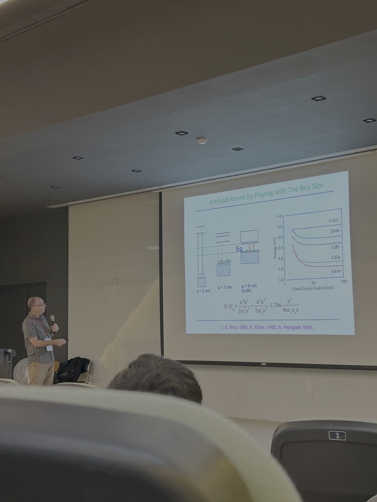
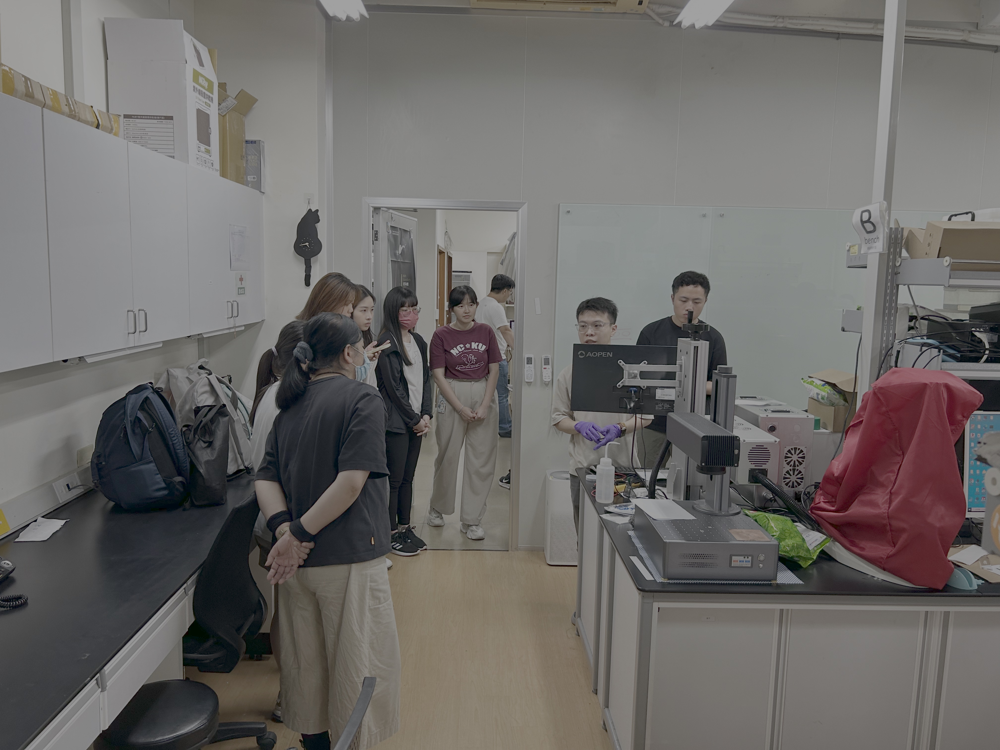
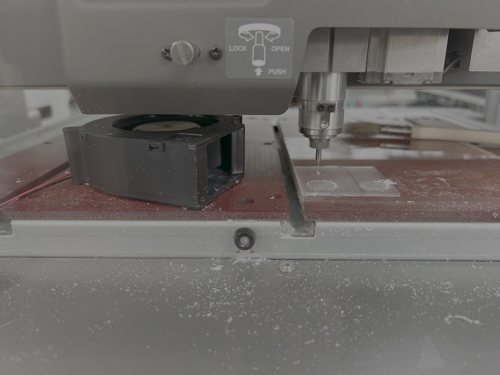
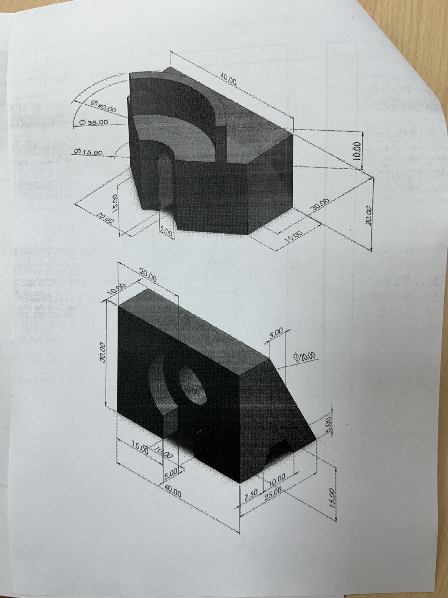
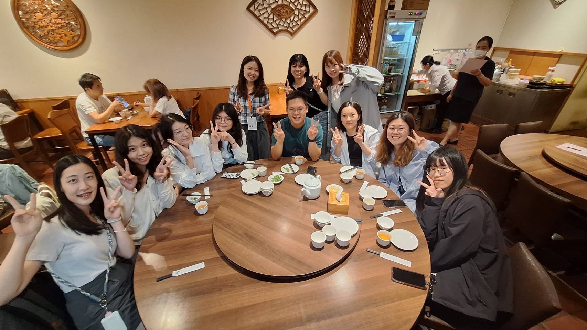
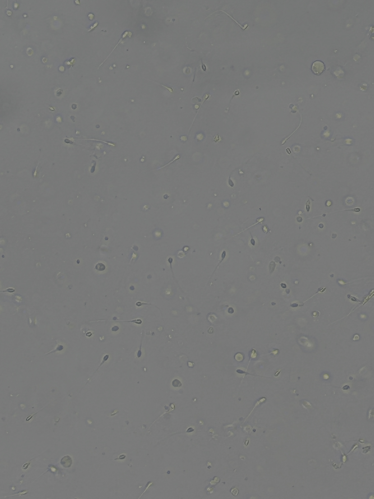

NYCU International Summer Experience
An international summer experience at National Yang Ming Chiao Tung University at a biomedical engineering graduate lab under their EE department.
Experience
The program combined lectures, laboratory demonstrations, research presentations, and hands-on exposure to engineering and scientific equipment.
I participated in the program primarily as a student and observer, using the opportunity to learn about research environments and technologies outside of my normal electrical engineering coursework.
Topics & Activities
- Nanotechnology and materials science lectures
- Laboratory demonstrations and equipment
- Microscopy and microfluidics
- Fabrication and machining exposure
- CAD and engineering drawings
- Research presentations and discussions
- Hands-on experimental demonstrations
Microfluidics
One of the more interesting things I got to do was donate a test sample and watch my sperm swim under a microscope. But they presumably used it later on in a microchannel system used for sperm sorting.
This gave me insights into how microfluidic structures can be used to manipulate and separate biological samples at very small scales.
What I Took Away
The experience helped me better understand how engineering concepts are applied in laboratory and research environments outside of traditional classroom projects. It also reinforced that I don't really like biomedical engineering. The CNC machine was cool though.
Photos





